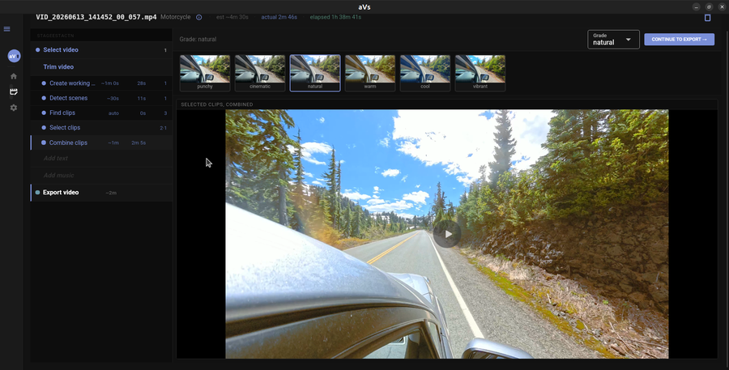

aVs
Pick a recording, aVs finds the best moments and trims it down, ready to share. Editing optional.

Linux · Windows · macOS · AGPLv3 licensed
No GPU required · Works fully offline · No LLMs or cloud
Built with AI. Useful, but not exhaustively tested. YMMV.
aVs scans for video files and reads clip metadata — duration, resolution, timestamps.
All analysis runs on the proxy. Originals are never modified.
Optical flow scores every frame. Sustained low-motion sections are flagged as dull.
Motion peaks and audio spikes — impacts, crowd noise, loud moments — boost a clip's score.
Browse thumbnail cards sorted by activity score. Click to include or skip. Rescue anything worth keeping from the dull pile.
Selected clips are trimmed and color-graded using your sport preset. A preview renders automatically.
aVs renders a final H.264 file in 16:9, 9:16, or 1:1 — ready to share.
aVs reads MP4 and MOV files from action cameras. RAW video and 360° formats are not yet supported.
GoPro GPMF and DJI SRT data (speed, GPS, altitude) parsed and folded into clip ranking alongside motion. Camera brand is detected at ingest; parsing comes next.
Opening titles, location tags, and end cards added to the assembled video.
Publish to YouTube, Instagram, and other platforms without leaving the app.
Full spherical footage support — projection, reframing, and export. Way in the future.
Download the AppImage, make it executable, run it.
chmod +x aVs-*.AppImage
./aVs-*.AppImageOn minimal installs: sudo apt install libgtk-3-0 libwebkit2gtk-4.0-37
Run the installer. Standard Next → Next → Install wizard. No dependencies required.
Download InstallerOpen the DMG, drag aVs to Applications. On first launch, right-click → Open to pass Gatekeeper (one time only).
Download DMG